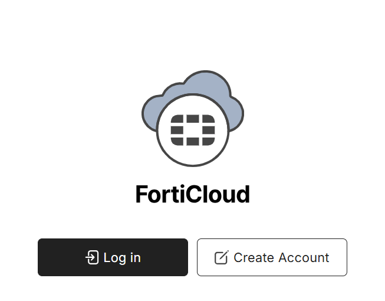
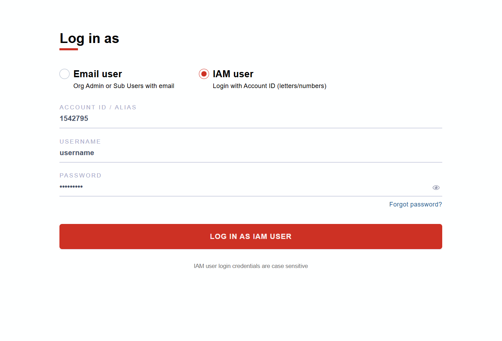
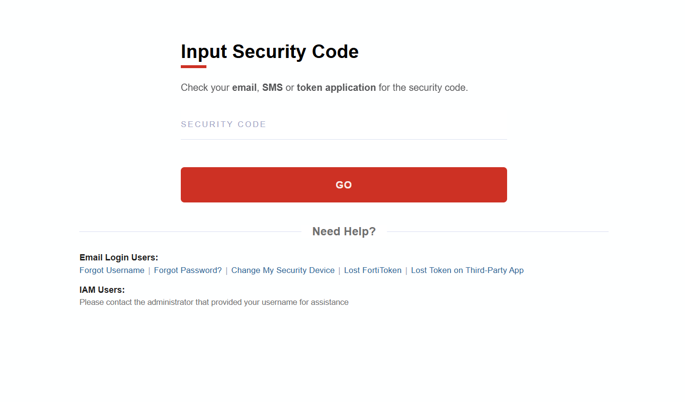
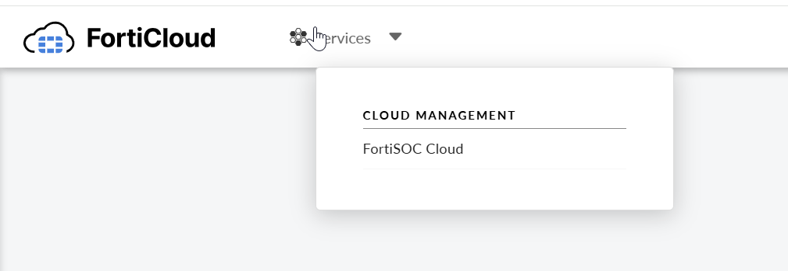
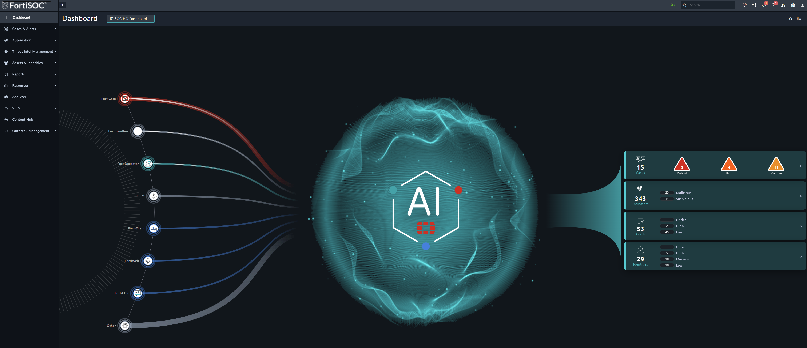
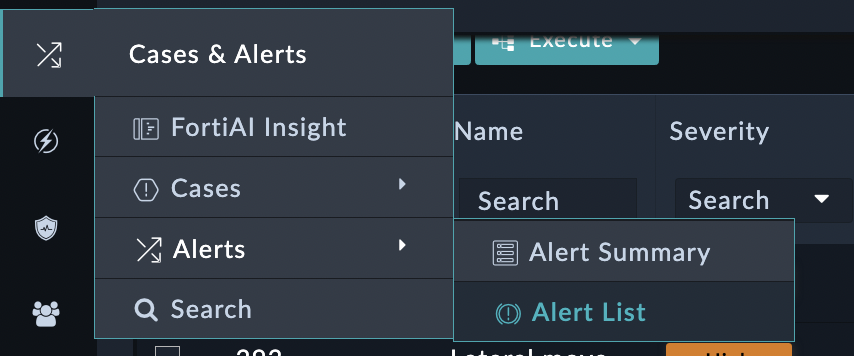
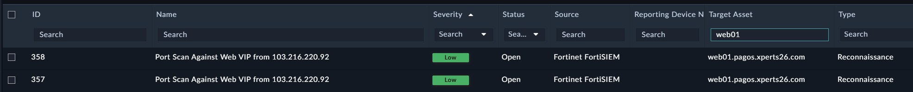

Introducción#
0.1. Qué vas a aprender#
Vas a investigar un compromiso. No hay que configurar nada ni lanzar ataques: los hechos están en la plataforma y tu trabajo es reconstruir qué pasó, demostrarlo con evidencias y decidir qué hacer.
Cada parte del laboratorio contiene las tareas que marcan qué hacer y las preguntas que comprueban lo que has entendido.
0.2. Acceso al entorno: FortiSOC#
Todo el laboratorio se hace dentro de FortiSOC, la plataforma de operaciones de seguridad de Fortinet en la nube (SaaS sobre FortiCloud). Aquí conviven las alertas y los casos, los dashboards, la automatización (playbooks) y el análisis de FortiAI. En este laboratorio no vas a configurarla: entras con tu propio correo y encuentras la telemetría del caso PHP2Shell ya cargada, lista para usar. Los FortiGate y los analizadores que generan los logs están detrás de la plataforma y no se tocan.
La entrada se hace siempre por FortiCloud, con un único Account ID para toda la clase; tu identidad es tu dirección de correo, para la que te hemos creado una cuenta.
Cómo entrar, paso a paso
Abre
https://www.forticloud.comen el navegador.
Pulsa Login y selecciona el método IAM User.
Escribe el Account ID
1542795(es el mismo para todos).
Escribe tu dirección de correo (es tu nombre de usuario) y tu contraseña.
Pulsa el botón Log in as IAM user.
Si tu cuenta tiene un segundo factor (MFA) activado, te llegará un código de seguridad a tu correo/móvil: introdúcelo para continuar. Y si aparece una pantalla intermedia de bienvenida con un botón Enter, pulsa: es la puerta a tu instancia.

Pincha en Services > FortiSOC Cloud.



0.3. Conoce la plataforma: dónde vive tu ejercicio#
Ahora que ya has entrado, cinco minutos de tour. Estas son las únicas pantallas que necesitas para las ocho tareas: con saber qué hace cada una es suficiente, cada tarea te indicará desde cuál se entra.


Las pantallas que importan
| Pantalla | Para qué la usarás en este laboratorio |
|---|---|
| Menú lateral / Home | La puerta de entrada a todo lo demás de tu instancia. |
| Cases and Alerts – Alerts – Alert List | El listado de alertas con filtros por tipo y severidad. Aquí arranca la Tarea 1. |
| Cases and Alerts – Cases – Case List | Los casos ya abiertos por la correlación y los que tú escales a mano. Dentro de un caso están el timeline, las alertas que lo componen, la severidad, las etiquetas y el análisis de FortiAI. |
| Alerta – Source Data y pestaña TIP | El registro crudo detrás de cada alerta y la reputación de los IOC. Es la evidencia que tendrás que señalar en pantalla. |
| Dashboards | Los dos paneles del laboratorio: XPERTS26 VULN (activos y vulnerabilidades) y XPERTS26_PHP_TTP (técnicas ATT&CK). |
| Automation – Playbooks | Las recetas que enriquecen los casos (XPERTS26_VULN y los FortiAI de Case Enrichment). Se leen, no se editan. |
| Execute | Acciones sobre alertas y casos: Escalate to Case, Generate AI enrichment e informes. |
| FortiAI: asistente e insights | El chat con el que preguntas sobre el caso y el resumen que la IA escribe sola antes de que llegues. |
| Assets | El inventario del laboratorio: web01, db01. |
0.4. Cómo llegar al punto de partida#
Entra en Cases and Alerts → Alerts → Alert List y filtra por Target Asset web01 y localiza las dos alertas del escaneo.




Duración
El workshop dura 4 horas en total, con la introducción incluida: el tour es rápido y el tiempo real está en las ocho tareas. Si algo no aparece en la tabla de arriba, probablemente no lo necesites.
0.5. Contexto del ataque#
PHP2Shell es una campaña real de explotación contra portales expuestos en PHP-FPM que simulamos aquí con telemetría sintética e IOC de reputación pública.
El objetivo de esta versión es el portal de pagos del ámbito xperts26: web01 (10.10.20.15, VIP 203.0.113.45) y su base db01 (10.10.20.30, MySQL), protegidos por el FortiGate con una política de borde wan1 → dmz.
El ataque se despliega en ocho fases, en unos 19 minutos:
- Reconocimiento desde
103.216.220.92(barrido de puertos bloqueado con deny en el cortafuegos). - Explotación del PHP-FPM 8.4.6 sin parchear mediante una petición multipart sobredimensionada y un agotamiento de memoria (
PHP.longjmp.Remote.Code.Execution, firma IPS62657,CVE-2026-109618). - Instalación con creación de la cuenta
svc_weby despliegue de webshell en/var/www/html. - Mando y control con balizas periódicas hacia
31.223.184.166. - Exfiltración masiva a
95.217.98.37. - Movimiento lateral de
web01adb01por SSH y MySQL.
Las dos IPs de C2/exfiltración están enriquecidas con VirusTotal y responden Malicious; las técnicas ATT&CK asociadas van de T1595 (scanning) a T1048 (exfiltración) y T1021/T1210 (lateral).
Vuestra misión: reconstruir esa cadena desde la evidencia — alertas, source data crudo, IOCs con procedencia, ATT&CK y cronología.
Nota
Los eventos de este laboratorio son sintéticos y están construidos para el ejercicio. No corresponden a tráfico observado en ninguna red real del cliente.
0.6. Mapa del laboratorio#
Ocho tareas. No siguen el orden en que aparecen en la lista, sino el orden en que ocurrió el ataque. Empieza por la primera y no saltes.
| Tarea | Momento | Severidad | Pregunta que responde |
|---|---|---|---|
| 1 | Reconocimiento · alertas | Low | ¿Quién está mirando y qué busca? |
| 2 | Explotación | Medium | ¿Cómo entra? |
| 3 | Instalación | High | ¿Qué deja dentro? |
| 4 | Mando y control | High | ¿A dónde llama? |
| 5 | Exfiltración | Medium | ¿Qué se lleva y qué aprecia la IA? |
| 6 | Auditoría de la IA | — | ¿Dónde y cómo se ejecuta la IA? |
| 7 | Movimiento lateral | High | ¿Hasta dónde llega y qué haces a mano? |
| 8 | Informe y expediente | — | ¿Qué decides y qué entregas? |
0.7. Antes de empezar#
Cómo está montado el laboratorio:
- Tres activos clave:
web01con dos CVE pendientes de parchear (CVE-2026-109618yCVE-2026-109619),db01y el cortafuegos que los “protege”. - Una nueva identidad:
svc_web. - 12 alertas con sus eventos SIEM.
- Seis casos ya abiertos por la correlación automática (salvo alguno, que escalarás a mano).
- Dos dashboards dedicados al alcance.
- Tres playbooks que aplican al laboratorio.
Convenciones de esta guía:
| Convención | Qué significa |
|---|---|
| Registro de evidencias | La tabla donde anotas lo que encuentres. Si no puedes rellenarla, la tarea no está terminada. |
| Preguntas de control | Comprueban que has entendido lo que has visto, no solo que has hecho clic. Se responden en la web de la competición. |
| Pista | Ayuda si te atascas. Intenta resolverlo antes sin ella. |
Regla de oro del laboratorio
Cada afirmación que escribas en el informe final tiene que apoyarse en un campo concreto que puedas señalar en pantalla. Si no puedes señalar en pantalla, no la escribas.
0.8. La IA ya ha trabajado antes de que llegues#
Antes de abrir un caso hay algo que necesitas entender: el análisis de impacto no lo pides tú. Ya está hecho cuando llegas, y se rehace si modificas el caso. Y si se requiere, también puedes refrescarlo con la acción Generate AI enrichment desde el propio caso.
Qué hace la plataforma sola:
| Agentic Playbook | Estado | Cuándo se ejecuta |
|---|---|---|
| FortiAI - Case Enrichment & Impact Analysis (On Create) | Activo | Al crear un caso, sin intervención |
| FortiAI - Case Enrichment & Impact Analysis (On Update) | Activo | Al modificar un caso, sin intervención |
| FortiAI - Case Enrichment & Impact Analysis | Activo | Manual o llamado por otro |
| FortiAI - Case Impact Assessments | Activo | Manual, sobre el caso seleccionado |
| FortiAI - Incident Impact Assessments - Multiple Language Support | Activo | Manual, variante multiidioma |
| FortiAI - Asset Threat Posture Timeline | Activo | Postura del activo a lo largo del tiempo |
| Playbook | Estado | Cuándo se ejecuta |
|---|---|---|
| XPERTS26_VULN | Activo | Al crearse cualquier caso del ámbito xperts26: escribe la vulnerabilidad y su ficha al pie del caso |
Por qué importa: el análisis no es un adorno: llega antes que tú, condiciona la primera impresión del caso y muchas veces es lo único que lee el que recibe el turno de noche. Tu responsabilidad es comprobar que lo que dice se sostiene en las evidencias.